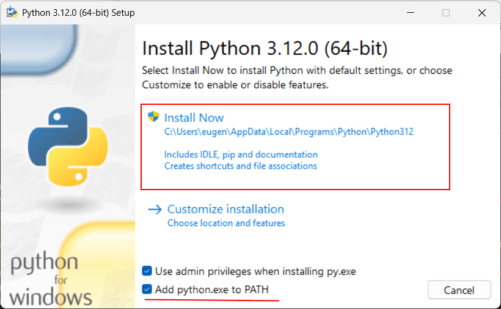

- Язык программирования Python
- Установка Python и первая программа на Windows
- Установка Python и первая программа на MacOS
- Установка Python и первая программа на Linux
- Управление версиями Python на Windows, MacOS и Linux
- Первая программа в PyCharm
- Python в Visual Studio
Глава 1. Введение в Python
Установка
Для создания программ на Python нам потребуется интерпретатор. Для его установки перейдем на страницу https://www.python.org/downloads/ и найдем ссылку на загрузку последней версии языка:
По нажатию на кнопку будет загружен соответствующей текущей ОС установщик Python. Следует учитывать, что Windows 7 и более ранние версии не поддерживаются.
На ОС Windows при запуске инсталлятора запускает окно мастера установки:
Здесь мы можем задать путь, по которому будет устанавливаться интерпретатор. Оставим его по умолчанию, то есть C:\Users\[имя_пользователя]\AppData\Local\Programs\Python\Python312\.
Кроме того, в самом низу отметим флажок "Add Python 3.12 to PATH", чтобы добавить путь к интерпретатору в переменные среды.
После этого мы можем проверить установку Python и его версию, запустив в командной строке/треминале команду
python --version
Запуск интерпретатора
После установки интерпретатора, как было описано в прошлой теме, мы можем начать создавать приложения на Python. Итак, создадим первую простенькую программу.
Как было сказано в прошлой теме, программа интерпретатора, если при установке не был изменен адрес, по умолчанию устанавливается на Linux по пути usr/local/bin/python311, а на Windows по пути C:\Users\[имя_пользователя]\AppData\Local\Programs\Python\Python311\ и представляет файл под названием python.exe.
Запустим интерпретатор и введем в него следующую строку:
print "hello world"
И консоль выведет строку "hello world":
Python 3.12.0 (tags/v3.12.0:0fb18b0, Oct 2 2023, 13:03:39) [MSC v.1935 64 bit (AMD64)] on win32
Type "help", "copyright", "credits" or "license" for more information.
>>> print("hello world")
hello world
Для этой программы использовалась функция print(), которая выводит некоторую строку на консоль.
Создание файла программы
В реальности, как правило, программы определяются во внешних файлах-скриптах и затем передаются интерпретатору на выполнение. Поэтому создадим файл программы. Для этого на диске C или где-нибудь в другом месте файловой системы определим для скриптов папку python. А в этой папке создадим новый текстовый файл, который назовем hello.py. По умолчанию файлы с кодом на языке Python, как правило, имеют расширение py.
Откроем этот файл в любом текстовом редакторе и добавим в него следующий код:
1 2 | name = input("Введите имя: ")print("Привет,", name) |
Скрипт состоит из двух строк. Первая строка с помощью функции input() ожидает ввода пользователем своего имени. Введенное
имя затем попадает в переменную name.
Вторая строка с помощью функции print() выводит приветствие вместе с введенным именем.
Теперь запустим командную строку/терминал и с помощью команды cd перейдем к папке, где находится файл с исходным кодом hello.py (например, в моем случае это папка C:\python).
cd c:\python
Далее вначале введем полный путь к интерпретатору, а затем полный путь к файлу скрипта. К примеру, в моем случае в консоль надо будет вести:
C:\Users\eugen\AppData\Local\Programs\Python\Python312\python.exe hello.py
Но если при установке была указана опция "Add Python 3.12 to PATH", то есть путь к интерпретатору Python был добавлен в переменные среды, то вместо полного пути к интерпретатору можно просто написать python:
python hello.py
Либо даже можно сократить:
py hello.py
Варианты с обоими способами запуска:
Microsoft Windows [Version 10.0.22621.2361]
(c) Корпорация Майкрософт (Microsoft Corporation). Все права защищены.
C:\Users\eugen>cd c:\python
c:\python>C:\Users\eugen\AppData\Local\Programs\Python\Python312\python.exe hello.py
Введите имя: Eugene
Привет, Eugene
c:\python>python hello.py
Введите имя: Tom
Привет, Tom
c:\python>py hello.py
Введите имя: Bob
Привет, Bob
c:\python>
В итоге программа выведет приглашение к вводу имени, а затем приветствие.